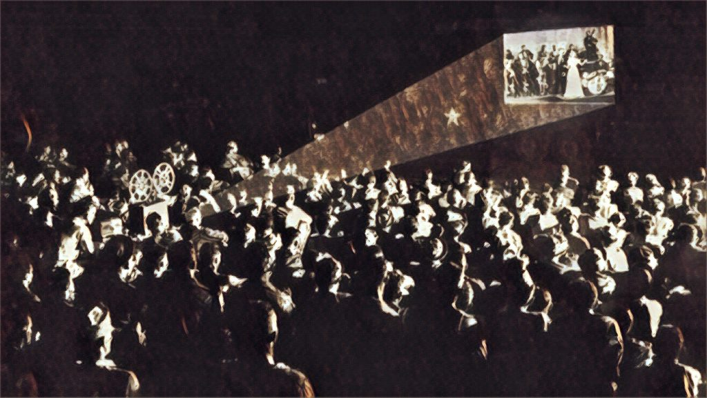

O cinema é algo muito utilizado em forma de lazer nos dias de hoje,porém muita gente não sabe o quão ele é maior que isso, muito maior.
O cinema existe desde tempos antigos e sempre foi bem popular.Todos os filmes que existem, sendo ruim ou não,possuem toda uma motivação por trás, e principalmente críticas a sociedade, isso principalmente durante as décadas que ocorreram a ditadura militar.Com o tempo, começaram a existir premiações para premiar os filmes, o roteiro, os atores, a direção, e tudo englobado aos filmes, e a principal de todas é o Oscar, mas também outras importantes como o Globo de Ouro, o Emmy, queé o Oscar da televisão.